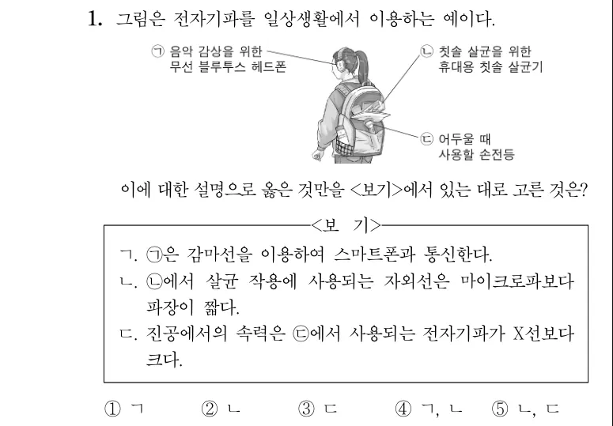
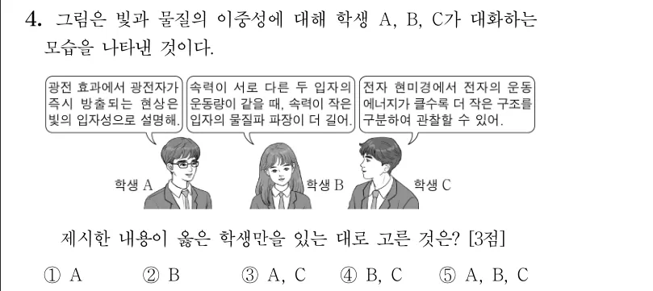

과목과 단원으로
바로 찾으세요.
필요한 범위를 고르고 검색어로 좁히세요.
단원은 선택한 과목에 맞게 보여 줍니다.
과학탐구물리학Ⅰ2025 수능
⌕ 전자기파
물질과 전자기장파동과 정보 통신
파일을 직접 열면 검색과 문서 변환을 사용할 수 없습니다.
기출 탐색기 열기과목과 단원으로 찾고, 필요한 문항을 모아
편집 가능한 한글 문서로 만드세요.
필요한 범위를 고르고 검색어로 좁히세요.
단원은 선택한 과목에 맞게 보여 줍니다.
필요한 문항만 고르고 순서를 바꾸세요.
선택은 이 브라우저에 보관됩니다.


그림 포함 여부와 문항 배치를 고르세요.
수정한 문서는 HWPX로 내려받습니다.
ㄱ. 진공에서도 전파된다.
ㄴ. 파동의 성질을 가진다.
검색 결과에서 문항을 고르면 원본 PDF의 해당 문항을 보여줍니다.